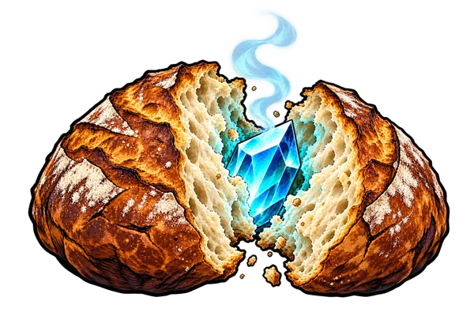

Cały dział, krok po kroku
Wirusy, klasyfikacja, bakterie i archeowce, protisty, grzyby i porosty. Zadania z omówieniem i małymi podpowiedziami.
40 zadań · 100 punktów6 dodatkowych zadańWynik i powtórka
Przejdź do zadańWybierz temat. Rozwiąż test i sprawdź wyjaśnienia odpowiedzi.
Wirusy, klasyfikacja, bakterie i archeowce, protisty, grzyby i porosty. Zadania z omówieniem i małymi podpowiedziami.
DNA i chromosomy, mitoza i mejoza, krzyżówki genetyczne, grupy krwi i mutacje. Wyjaśnienie każdej odpowiedzi.
Czynności życiowe, budowa komórki, samożywność i cudzożywność. Wyjaśnienie po każdej odpowiedzi.
Budowa, cykle infekcyjne, retrowirusy i znaczenie wirusów. Podpowiedzi oraz omówienie odpowiedzi.
Nabłonkowa, łączna, mięśniowa i nerwowa. Pytania o związki budowy z funkcją, z wyjaśnieniami.
Wzory, otrzymywanie, właściwości i zastosowanie. Równania reakcji i interpretacja doświadczeń.
Podzielność, NWD i NWW, rodzaje liczb, potęgi i pierwiastki. Jeden temat, trzy poziomy trudności.
Wirusy · klasyfikacja · bakterie i archeowce · protisty · grzyby i porosty. Pięć tematów z rysunkami, schematami i pojęciami do powtórki.

Chleb na zaKWASIE
Mr. White, Jesse i kamper na pustyni. Komiksowa przygoda: wybieraj butelki, składaj wzory i ogarniaj reakcje. Osobny zakres na poprawę.
Przechwytuj meldunki, rozpoznawaj wydarzenia i analizuj akta. Początki II wojny światowej według NaCoBeZu.
Obsługuj gości po hiszpańsku: produkty, zamówienia z napojami i rozmowy. Trudne słówka wracają częściej.
Obracaj samolotem w centrum i strzelaj do nadlatującej planety z poprawnym wynikiem. Tabliczka mnożenia dla Agi.
Ćwicz rozpoznawanie mórz na mapie. Otwórz swoją grę geograficzną.
Spróbuj innego hasła lub wybierz inny przedmiot.